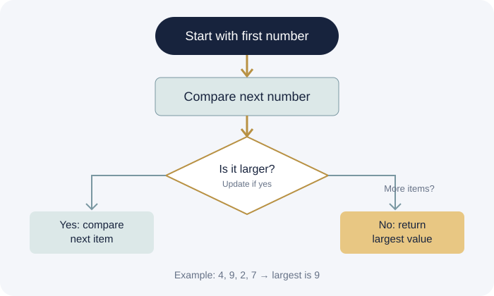

An algorithm is a finite sequence of well-defined steps used to solve a problem or complete a task.
Find the largest number
Consider the numbers 4, 9, 2, 7.
- Assume the first number, 4, is largest.
- Compare 9. Update the largest number to 9.
- Compare 2. Keep 9.
- Compare 7. Keep 9.
- The answer is 9.

A simplified step-by-step process
Important concepts
Searching
Finding a particular item in a collection of data.
Sorting
Arranging data in a specified order.
Time complexity
How running time grows as input size increases.
Space complexity
How memory requirements grow with input size.
Where are algorithms used?
Search engines retrieve information; navigation apps calculate routes; online stores filter products; and AI systems use algorithms to select actions or make predictions.
Key takeaway: A good algorithm solves the right problem correctly, with appropriate use of time and memory.